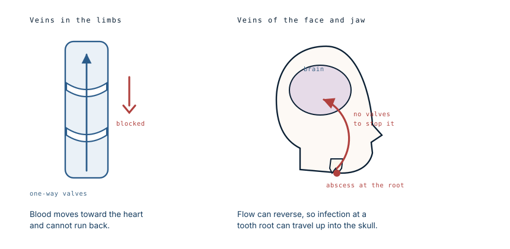
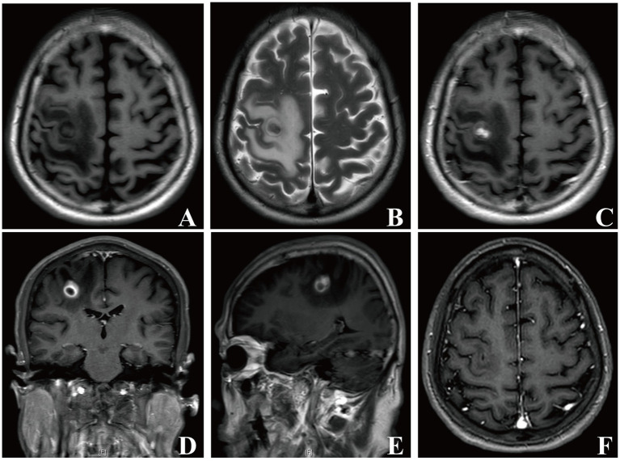

The abscesses in his brain came from his teeth
A 56-year-old man arrived at work looking unwell and not making sense. His colleague drove him to hospital. The scan showed multiple abscesses in his brain, and the source was decay in teeth that had never been treated and never particularly hurt.
- Specialty
- Neurosurgery, infectious disease, dentistry
- Patient
- Man, 56
- Brought in by
- A co-worker, after he turned up to work confused
- Preceding week
- Worsening headache, intermittent fever, memory lapses, tunnel vision
- Finding
- Multiple brain abscesses
- Source
- Undetected dental decay, before any dental treatment
- Background rate
- Brain abscess around 1 in 100,000 per year; 3–10% of dental origin
- yearssilent decay
- 1 weekheadache, fever, confusion
- day 0brought in by a colleague
- weeksdrainage and antibiotics
Why it presented as confusion
The symptoms that brought him in were behavioural, not neurological in the obvious sense. He looked unwell. He was not himself. In the week before, he had headaches that kept getting worse, a fever that came and went, gaps in his memory for recent events, and narrowing vision.
Nobody at work would connect that to a tooth, and nor would most clinicians. The classic triad of brain abscess — fever, headache and altered mental state — is present together in only about one patient in five or six. Most present with some of it, and the frontal lobes in particular are clinically quiet: a mass can grow there and produce changes in personality, judgement and memory long before it produces anything as unambiguous as a weak arm.
How a tooth reaches the brain
Decay that reaches the pulp kills the nerve inside the tooth and the space becomes colonised. The infection then works down the root canal and out through the tip into the bone, forming a periapical abscess. That is a sealed pocket of bacteria at the base of a tooth, and it can sit there for years causing little or no pain, particularly once the pulp is dead and there is nothing left to hurt.
From there, three routes lead upward. Direct spread through the tissue planes of the face and into the sinuses. Seeding into the bloodstream. And a third one, which is the reason this happens at all.

Veins in the arms and legs contain valves — small flaps that let blood pass toward the heart and snap shut against anything trying to move the other way. It is what stops blood pooling in your feet when you stand.
The veins draining the face and jaw have no valves. There is a network of them behind the jaw connecting, through small channels passing through the skull base, to the large venous spaces inside the head. Because there are no valves, flow in that network can reverse. Infected material at a tooth root can therefore travel backwards, upstream, into the cranial cavity — which is why the middle of the face has been called the danger triangle for well over a century.
This is the part that surprises people. It is not that bacteria are strong enough to force their way in. It is that the plumbing was never designed to stop them going that way.

What made this case worth publishing
Brain abscesses of dental origin are usually reported after dental work — after an extraction or a procedure that disturbs an infected site and pushes bacteria into the circulation. That version is at least explicable, and it comes with a clear time link.
This patient had not had any dental treatment. The abscesses arose from decay that had gone undetected, in a man with no dental complaint that had brought him to anyone's attention. There was no procedure to blame and no obvious moment when it started.
That inverts the usual reassurance. The risk is not confined to the aftermath of dental work. A quiet, untreated, painless infection can do this on its own.
What treatment involves
Two problems have to be solved at once, and solving only one fails.
The abscess itself needs draining and a long course of antibiotics — long meaning weeks, not days, because antibiotics penetrate poorly into a walled-off collection of pus and the brain is unforgiving of relapse. He continued ceftriaxone for a further fortnight after recovering.
The second problem is the source. Treating a brain abscess without dealing with the teeth leaves the supply line open, and reinfection is the predictable result. In cases like this the dental work is not aftercare. It is part of the treatment, and it often means clearing multiple teeth rather than saving them.
The practical point
Almost nobody with untreated decay gets a brain abscess. Brain abscess is rare, and only a small minority of those are dental in origin. Nothing here justifies alarm about an aching tooth.
What is worth taking from it is narrower and more useful: a dead or decayed tooth does not become safe by ceasing to hurt. Pain stops when the nerve dies, and the infection at the root carries on regardless. The absence of symptoms is not evidence that the problem resolved, and that is precisely the situation in which these infections go undetected for years.
What this case teaches
The anatomy explains the whole case. Veins that would normally prevent backflow are absent in the face, so an infection anchored to a tooth root has a route into the skull that requires nothing unusual to happen. The presentation was confusion rather than pain, because the frontal lobe tolerates a growing mass quietly. And the treatment was not complete until the teeth were dealt with, because draining the abscess without closing the source only postpones it.
Written from the case described in the Annals of the Royal College of Surgeons of England (a case of odontogenic brain abscess arising from covert dental sepsis) and from standard references on odontogenic infection, cranial venous anatomy and brain abscess management. Imaging from the source case is not reproduced here; the MRI shown is from a separate published case of brain abscess caused by an oral bacterium, reproduced under its CC BY 4.0 licence. The diagram is original to MedicaseHub, is simplified, and may be reused freely. This article is not medical advice. A worsening headache with fever or confusion needs urgent assessment, and untreated dental decay should be looked at by a dentist regardless of whether it hurts. Read the full disclaimer.